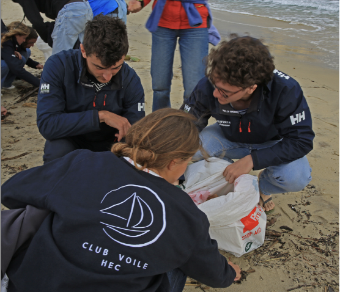

Devenez partenaires du Club Voile HEC lors de la CCE 2025
Qui sommes nous ?
Le Club Voile HEC est un groupe de 15 étudiants unis par une passion commune : la navigation. Nous cherchons à développer notre pratique du sport en parallèle de nos études et c'est pour cela que nous cherchons des fonds afin de participer aux diverses régates et compétitions étudiantes.
Notre objectif : participer grâce à votre soutien à la Course croisière EDHEC
La Course Croisière EDHEC (CCE), c’est quoi ? Une semaine de compétition par équipage de 8 personnes. Plus que le graal de la voile étudiante, un véritable objectif pour nous ! Le plus grand événement sportif étudiant d’Europe qui rassemble plus de 2000 étudiants venus des écoles et universités les plus prestigieuses (X, LSE, ESSEC…) Une course écoresponsable qui promeut la pratique du handivoile et agit pour réduire la quantité de déchets liée à l’événement.Premier forum de recrutement informel d’Europe.
Quel avantage pour vous ?
- Visibilité : vous serez associés à la première école de commerce de France
- Recrutement : vous serez représentés lors du plus grand forum de recrutement informel d'europe
- Relation particulière avec HEC : en devenant partenaire du club voile vous prenez part à la vie du Campus
Nos valeurs

L'écologie et la protection des écosystèmes marins
Le Club Voile d'HEC Paris se sent profondément concerné par la protection de l’environnement, en particulier des écosystèmes marins. La voile, en tant que sport naturellement respectueux de l’écologie, nous connecte directement à l'importance de protéger l'environnement et ses écosystèmes, et nous rappelle l'importance de préserver ces espaces fragiles. Conscients de la menace qui pèse sur les océans et leur biodiversité, nous sommes fortement engagés dans des actions visant à sensibiliser et à promouvoir des pratiques durables. Protéger la mer, c’est aussi protéger notre terrain de jeu et un patrimoine vital pour l'avenir. Pour ce faire nous organisons des collectes de déchets sur les plages où nous naviguons afin d'aider à la dépollution des océans.

Le dépassement de soi
Le Club Voile d'HEC Paris accorde une grande importance à l’excellence et au dépassement de soi. La voile est un sport exigeant, qui requiert à la fois rigueur, stratégie et esprit d’équipe. Chaque compétition est pour nous une occasion de repousser nos limites, d'améliorer nos performances et de viser toujours plus haut. Nous croyons fermement que se surpasser sur l’eau, c’est non seulement exceller techniquement, mais aussi développer des qualités de leadership et de résilience, essentielles dans la vie professionnelle comme personnelle. Pour poursuivre cette ambition d'excellence, nous organisons des sessions d'entraînement avec des anciens du CV HEC parmi lesquels figure des navigateurs expérimentés et de renoms.

La solidarité inter-générationnelle
Le Club Voile d'HEC Paris est bien plus qu'une simple équipe de compétition : c'est une véritable famille qui reste soudée dans le temps. Au-delà des régates, un fort esprit de camaraderie se construit, et cet esprit perdure bien après les études. Nos anciens membres, les alumni, reviennent régulièrement pour partager leur expérience, participer à nos événements ou tout simplement revivre l'aventure sur l'eau avec les nouvelles générations. Cette connexion intergénérationnelle est une richesse inestimable, qui renforce la cohésion du club et fait de chaque sortie en mer un moment privilégié, marqué par l’entraide et la transmission.